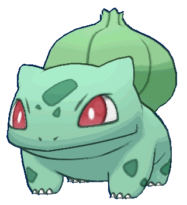
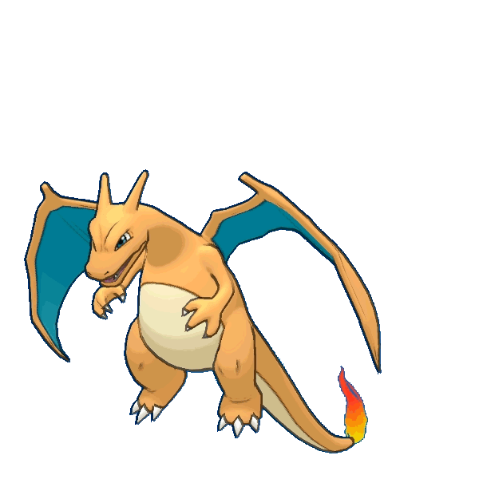
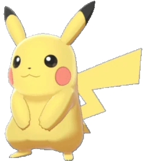

-
#01 - Bulbasaur
Seed Pokémon
Descrição
Bulbasaur (em japonês フシギダネ Fushigidane) é um Pokémon de dois tipos: Grass e Poison que foi introduzido na Geração I. Bulbasaur é um dos três Pokémon iniciais de Kanto, assim como Charmander e Squirtle, que podem ser escolhidos no começo de Pokémon Red, Green, Blue, FireRed, and LeafGreen. Ele evolui para Ivysaur no nível 16, que então evolui para Venusaur no nível 32. Ele também é o melhor Pokémon iniciante para uma playthrough de Kanto.
-
#06 - Charizard
Flame Pokémon
Descrição
Charizard (em japonês: リザードン Lizardon) é um Pokémon do tipo Fogo e Voador. Ele é a forma evoluída de Charmeleon quando chega no nível 36. Ele tambem é a forma final de Charmander.
-
#25 - Pikachu
Mouse Pokémon
Descrição
Pikachu (em Japonês: ピカチュウ Pikachu) é um Pokémon tipo elétrico. Ele é a forma evoluida de Pichu quando chega num certo ponto de amizade com o treinador e evolui para Raichu quando esta segurando uma Thunder Stone.
-
#150 - Mewtwo
Genetic Pokémon

Descrição
Mewtwo (em Japanes: ミュウツー Mewtwo) é um Pokémon lendário do tipo Psiquico introduzido na primeira geração. Ele Mega Evolui para Mega Mewtwo X ou Y quando entra em contato com uma Mewtwonite X ou Y.

POKÉDEX